Dominican Republic
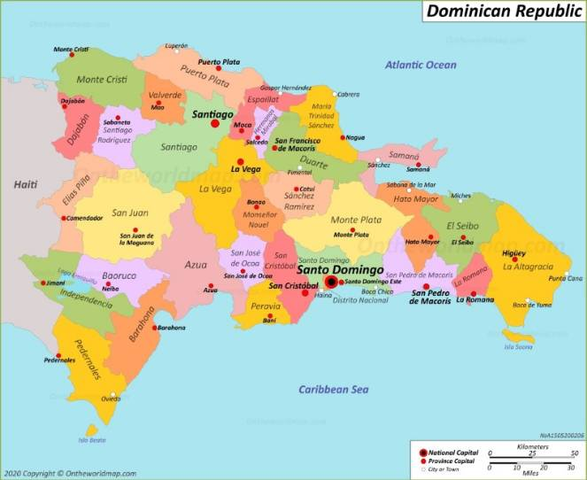
- Azua
- Poblacion: 289,264
- Senador:Lia Diaz
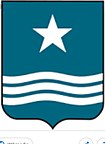
- Barahona
- Poblacion:226,898
- Senador:Jose Manuel del Castillo Savinon
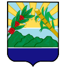
- Bahoruco
- Senador:Melania Salvador Jimenez
- Poblacion:111,269
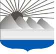
- Dajabon
- Senador: David Sosa
- Población: 67,887
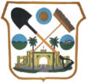
- Distrito Nacional
- Senador: Faride Raful
- Población: 1,484,789
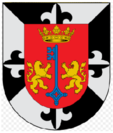
- Duarte
- Senador: Franklin Romero Morillo
- Población: 384,789
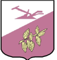
- Elías Piña
- Senador: Aris Yván Lorenzo Suero
- Población: 70,589
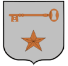
- El Seibo
- Senador: Santiago Jose Zorrilla
- Población: 115,889
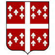
- Espaillat
- Senador: Carlos Gómez
- Población: 390,478
- Hato Mayor
- Senador: Cristobal Castillo
- Población: 89,578
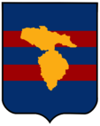
- Hermanas Mirabal
- Senador: Luis Canaán
- Población: 103,974
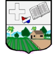
- Independencia
- Senador: Valentín Medrano
- Población: 54,785
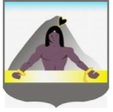
- La Altagracia
- Senador: Virgilio Cedano
- Población: 335,677
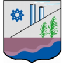
- La Romana
- Senador: Iván Fernández
- Población: 330,587
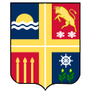
- La Vega
- Senador: Ramón Durán
- Población: 420,478
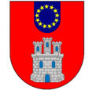
- María Trinidad Sánchez
- Senador: Alexis Yeb
- Población: 140,784
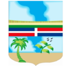
- Monseñor Nouel
- Senador: Héctor Acosta
- Población: 201,474
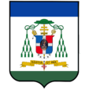
- Monte Cristi
- Senador: Ramón Gómez
- Población: 135,710
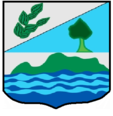
- Monte Plata
- Senador: Lenin López
- Población: 200,454
\
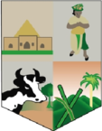
- Pedernales
- Senador: Dionis Carrasco
- Población: 38,941
- Peravia
- Senador: Milcíades Franjul
- Población: 298,747
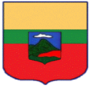
- Puerto Plata
- Senador:Ginnette Altagracia Bournigal
- Población: 490,733
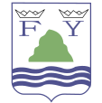
- Samaná
- Senador:Pedro Catrain
- Población:168,265
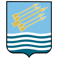
- San Cristóbal
- Senador:Franklin Rodríguez
- Población:859,741
- San José de Ocoa
- Senador:José Antonio Castillo
- Población: 82,458
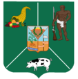
- San Juan
- Senador:Félix Bautista
- Población:300,476
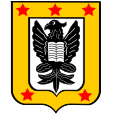
- San Pedro de Macorís
- Senador:Franklin Peña
- Población: 418,850
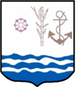
- Sanchez Ramirez
- Senador:Ricardo de los Santos
- Población:164,941
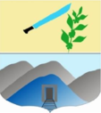
- Santiago
- Senador:Eduardo Estrella
- Población: 1,833,451
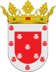
- Santiago Rodríguez
- Senador:Antonio Marte
- Población: 164,941
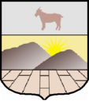
- Santo Domingo
- Senador:Antonio Taveras
- Población:4,995,211
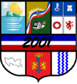
- Valverde
- Senador: Edilberto Nolasco
- Población: 207,447
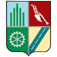